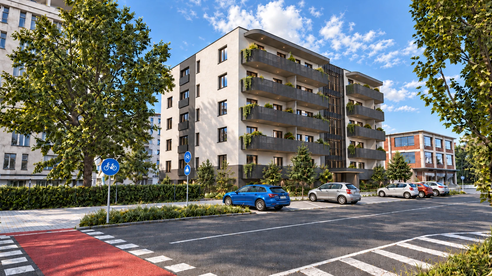
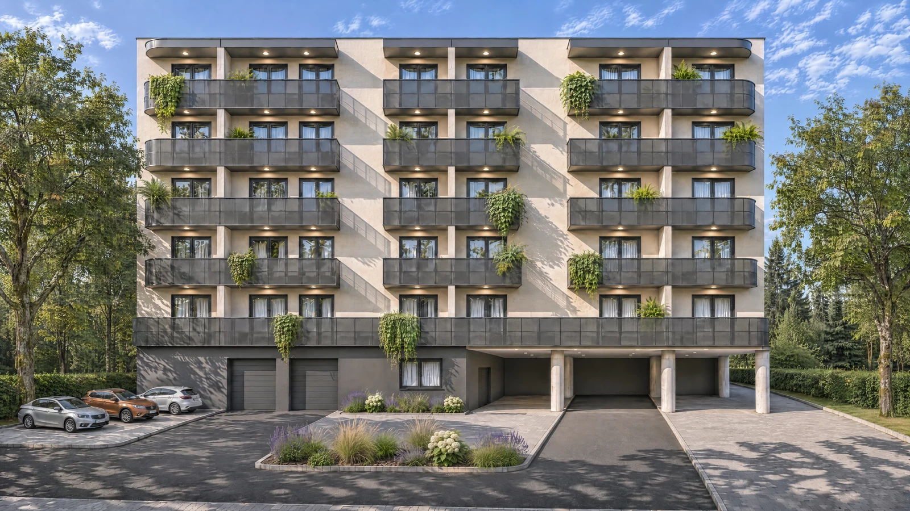
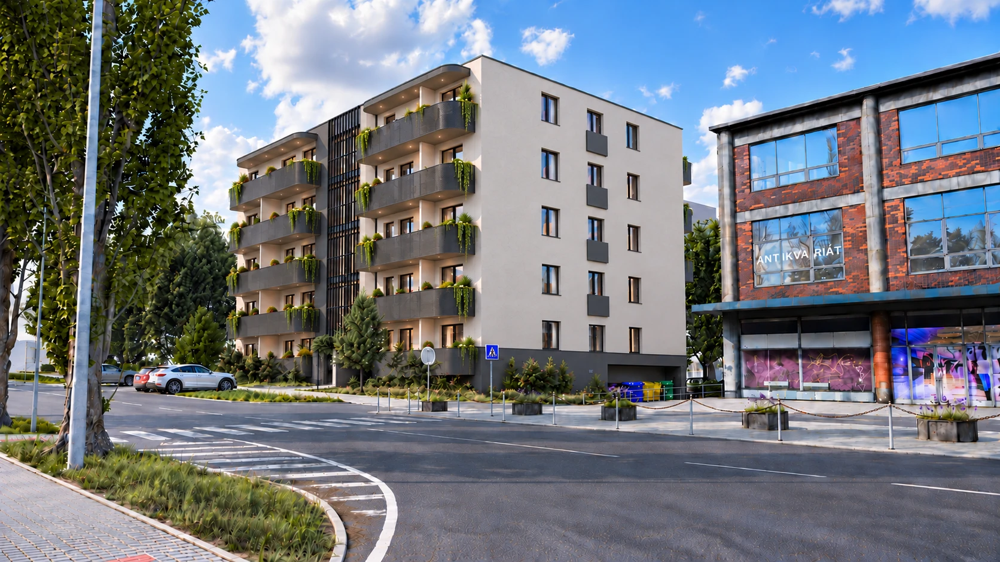
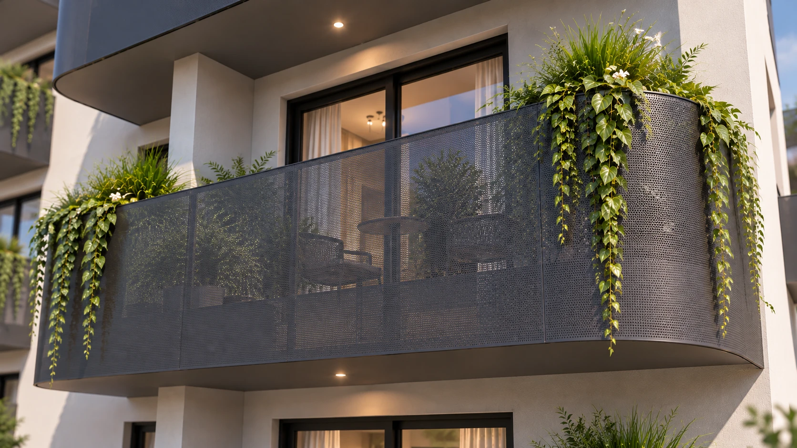
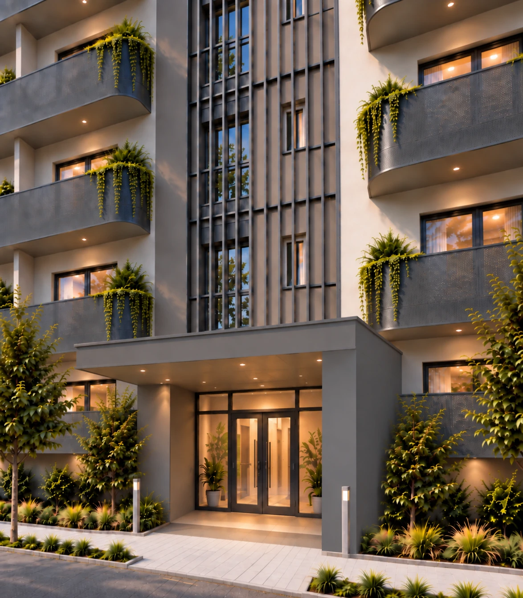
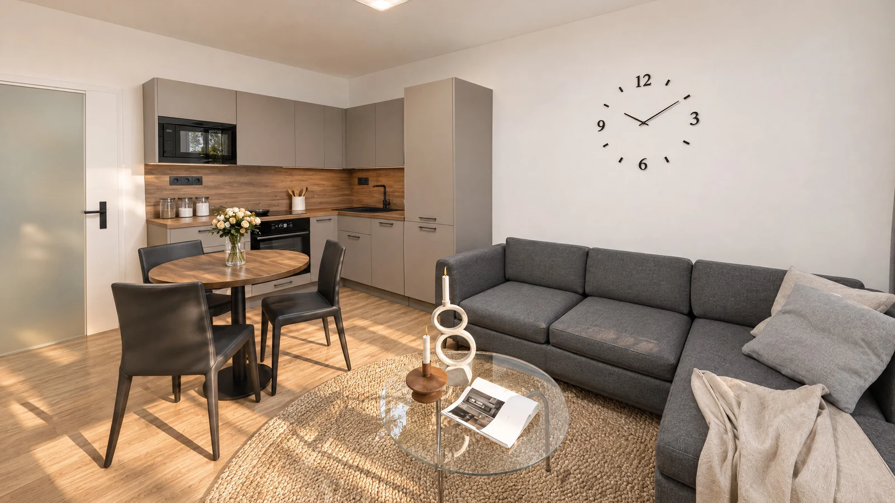
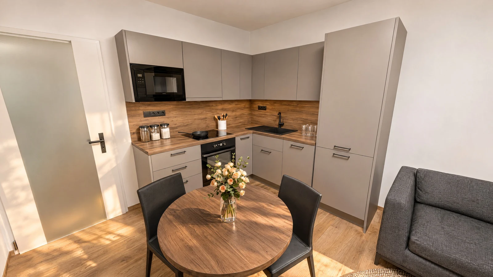

03 / ČESKÝ FILM INTERIÉRU
Pustit film interiéru Jeden den, vlastní tempo
Kuchyně, obývací pokoj, ložnice a koupelna v návrhu 2+kk.
Prohlédněte si dodané vizualizace domu a návrhy jeho interiérů.





Návrh zařízení. Kuchyň, spotřebiče, volný nábytek a žaluzie nejsou v ceně. Vybavení bytu


Kuchyně, obývací pokoj, ložnice a koupelna v návrhu 2+kk.
Vyberte podlaží, prohlédněte si půdorys a zjistěte cenu vybraného bytu.